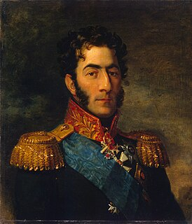

Белорусская наступательная операция «Багратион» — стратегическая наступательная операция Рабоче-крестьянской Красной армии (РККА) Вооружённых сил СССР против Вермахта (вооружённых сил) Нацистской Германии, проводившаяся с 23 июня по 29 августа 1944 года в ходе Великой Отечественной войны (1941—1945). В ходе операции «Багратион» советская армия нанесла крупное поражение немецкой армии, разгромив группу армий «Центр», что в сочетании с успехом наступления Союзников во Франции предопределило военное поражение нацистской Германии весной 1945 года.
Операция названа в честь русского полководца Петра Ивановича Багратиона, отличившегося в Итальянском и Швейцарском походах Суворова в 1799 год и получившего особенную известность в ходе кампании 1805 года, прославившись в сражении при Шёнграбене, и Отечественной войны 1812 года.
В ходе этого обширного наступления была освобождена территория Белоруссии, восточной Польши, часть Прибалтики и практически полностью разгромлена германская группа армий «Центр». Вермахт понёс тяжелейшие потери, отчасти из-за того, что А. Гитлер многократно запрещал отступление, не соглашаясь с предложениями своих генералов. Восполнить эти потери впоследствии Германия была уже не в состоянии.